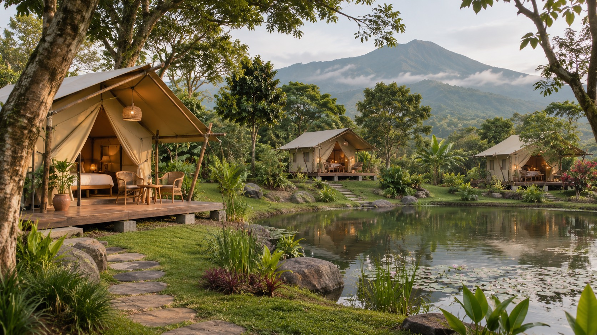
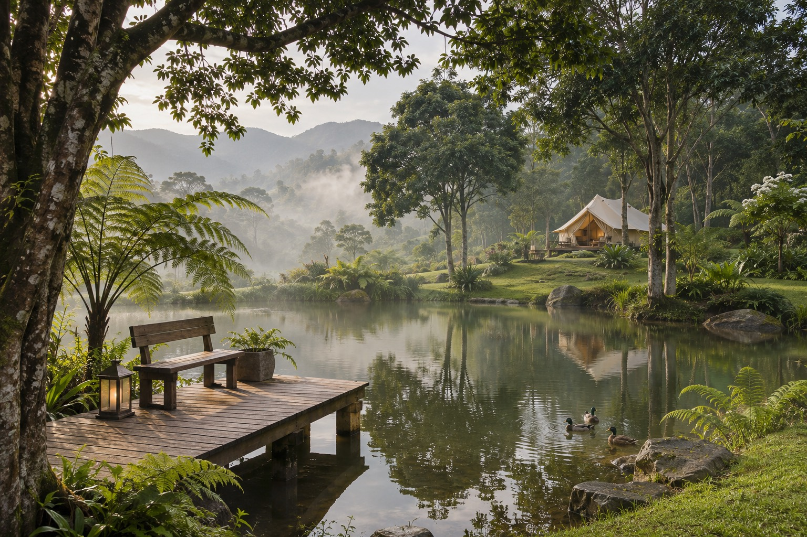
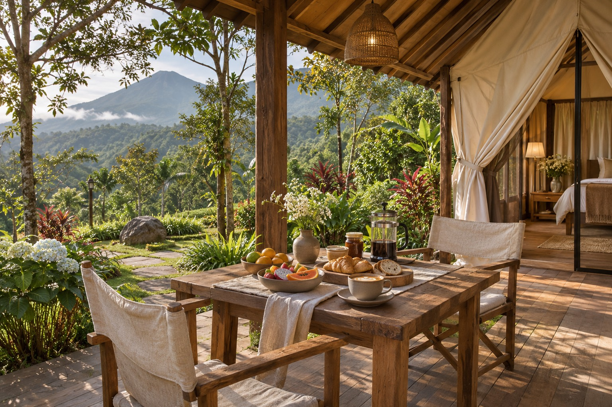
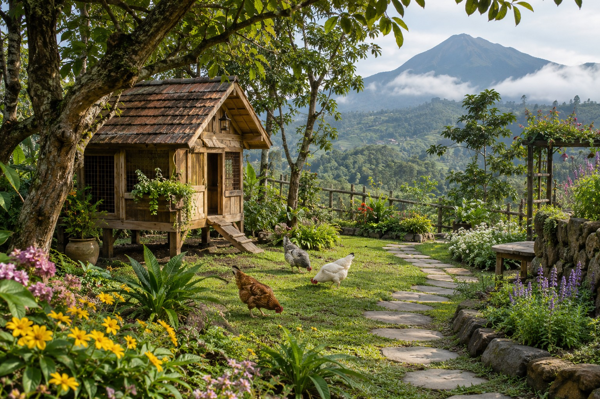
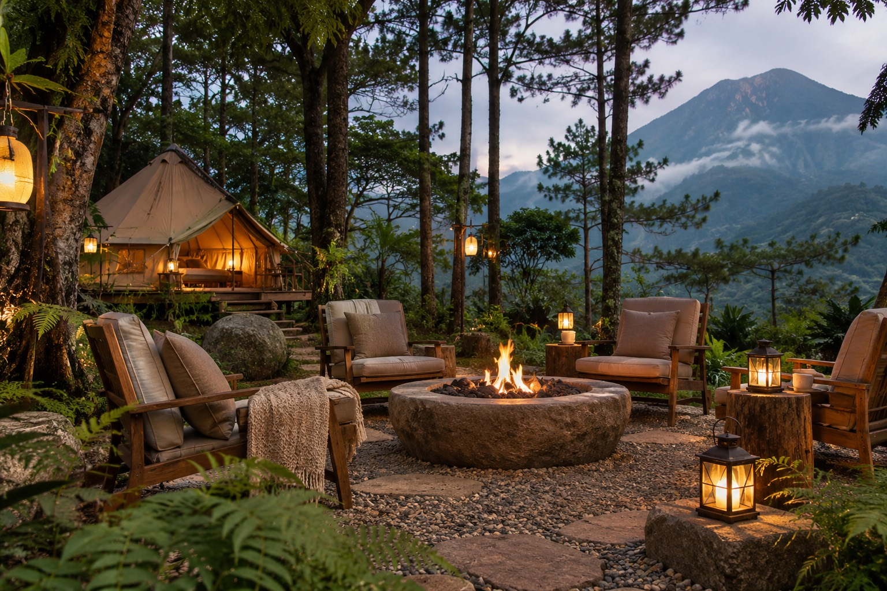

Arvorest Woods
A country rhythm.
A world of small wonders.
Luxury glamping and a quieter connection to the everyday outdoors.
The Mount Paradise vision
Arvorest Woods
Arvorest Woods is a partially developed subdivision within Mount Paradise, with luxury glamping, a pond, chickens and birds. It brings an easy country character to the wider destination. The images on this page are illustrative mood studies, reserved for replacement with photography from the real grounds.

Pondside life
Watch the water.
Lose track of time.
A pond, birdsong and a place to sit give this chapter its relaxed center. The atmosphere is informal, green and close to the everyday life of the countryside.

Glamping & slow mornings
The day begins
outside.
Comfortable glamping and simple outdoor rituals are part of Arvorest’s character. A covered deck, a breakfast table and the sound of the trees make a different kind of mountain stay.

The country garden
Small things.
Lasting memories.
Chickens, birds and the changing garden offer everyday encounters with nature. This lived-in country spirit gives Arvorest Woods an identity of its own.

Evenings among the trees
A little warmth.
A little company.
Lanterns, timber and a sheltered place to gather suggest the atmosphere for future evenings here. This visual direction will evolve with photographs and stories from the existing enclave.